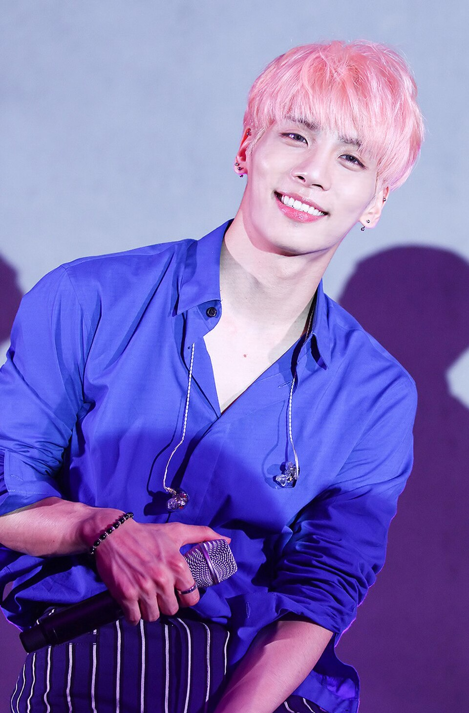

Kim JongHyun
Biografía
Jonghyun, cuyo nombre real era Kim Jong-hyun, nació el 8 de abril de 1990 en Seúl, Corea del Sur. Fue cantante, compositor, escritor y productor musical, reconocido por ser el vocalista principal del grupo SHINee, con el que debutó en 2008 bajo la agencia SM Entertainment. Desde el inicio de su carrera destacó por su potente voz, su amplio rango vocal y su notable capacidad interpretativa, características que lo posicionaron rápidamente como uno de los vocalistas más reconocidos dentro de la industria del K-pop.
Dentro de la agrupación, Jonghyun desempeñó un papel fundamental en la identidad sonora del grupo. Su timbre vocal, caracterizado por su intensidad emocional y estabilidad técnica, contribuyó a definir el estilo musical de SHINee, especialmente en canciones que requerían gran expresividad vocal y dominio de notas altas. Gracias a estas cualidades, fue frecuentemente reconocido por críticos musicales y especialistas del pop coreano como uno de los cantantes más sólidos de su generación.
Asimismo, Jonghyun fue apreciado por su presencia escénica y su capacidad para transmitir emociones durante las interpretaciones musicales. Su estilo vocal combinaba potencia, control y sensibilidad, elementos que le permitían adaptarse a diferentes estilos musicales dentro del repertorio del grupo, desde baladas hasta composiciones más dinámicas. Esta versatilidad contribuyó a que su voz se convirtiera en uno de los elementos distintivos dentro de las producciones del grupo.
A lo largo de su trayectoria artística, su talento vocal y su habilidad interpretativa le permitieron ganarse el respeto tanto del público como de profesionales de la industria musical. Estas cualidades lo consolidaron como una figura destacada dentro del panorama del K-pop, particularmente en lo que respecta a la interpretación vocal y la expresividad musical.
Carrera Musical
Durante su trayectoria con SHINee, participó activamente en la creación de múltiples canciones del grupo, además de escribir y componer música para otros artistas. En 2015 inició su carrera como solista con el lanzamiento de su primer mini álbum Base, seguido por producciones como She Is (2016) y el álbum recopilatorio Story Op.
Su estilo musical como solista exploró géneros como el R&B, el soul y el pop alternativo, permitiéndole desarrollar una identidad artística propia más allá de su trabajo en grupo. Además, se desempeñó como locutor de radio en el programa Blue Night, donde compartía reflexiones personales y música con sus oyentes.
Fallecimiento
 El 18 de diciembre de 2017, Jonghyun, cuyo nombre real era Kim Jong-hyun, falleció a los 27 años en
Seúl, Corea del Sur. La noticia fue confirmada por su agencia, SM Entertainment, y rápidamente se
difundió a través de medios de comunicación nacionales e internacionales. Su fallecimiento generó
una profunda conmoción tanto dentro de la industria del entretenimiento surcoreano como entre los
seguidores del grupo SHINee en distintas partes del mundo.
El 18 de diciembre de 2017, Jonghyun, cuyo nombre real era Kim Jong-hyun, falleció a los 27 años en
Seúl, Corea del Sur. La noticia fue confirmada por su agencia, SM Entertainment, y rápidamente se
difundió a través de medios de comunicación nacionales e internacionales. Su fallecimiento generó
una profunda conmoción tanto dentro de la industria del entretenimiento surcoreano como entre los
seguidores del grupo SHINee en distintas partes del mundo.
La reacción del público fue inmediata. Miles de admiradores comenzaron a expresar su tristeza y condolencias a través de redes sociales, utilizando diversas plataformas digitales para compartir mensajes, recuerdos y muestras de apoyo dirigidas a los integrantes del grupo y a la familia del artista. En Corea del Sur, numerosos fanáticos acudieron a los espacios habilitados para rendir homenaje, donde se colocaron flores, cartas y fotografías como forma de despedida.
Diversos artistas, figuras públicas y profesionales de la industria musical también manifestaron su pesar por la noticia. Cantantes, actores y productores expresaron públicamente su solidaridad, destacando el impacto que tuvo el acontecimiento dentro del ámbito cultural y del entretenimiento en Corea del Sur. En particular, el hecho generó un momento de reflexión dentro del mundo del K-pop, debido a la cercanía que muchos artistas y seguidores sentían hacia la figura de Jonghyun.
Asimismo, medios de comunicación internacionales dedicaron amplios espacios a informar sobre el acontecimiento y sobre la reacción global de los fans. Periódicos, programas de televisión y portales digitales cubrieron tanto la noticia como las manifestaciones de duelo que surgieron en diferentes países, evidenciando el alcance global que había adquirido el K-pop y la fuerte conexión entre los artistas coreanos y su audiencia internacional.
En este contexto, la noticia del fallecimiento de Jonghyun marcó un momento significativo para la comunidad de seguidores del K-pop, así como para la industria del entretenimiento surcoreano, debido al impacto emocional y mediático que provocó a nivel internacional.
Legado
Tras su fallecimiento, su música continuó siendo reconocida por su honestidad emocional y profundidad lírica. En 2018, se lanzó de manera póstuma el álbum Poet | Artist, el cual reflejó su visión artística y compromiso con la música.
El legado de Jonghyun permanece vigente a través de sus composiciones, su influencia en otros artistas y el impacto que tuvo en sus seguidores, siendo recordado no solo por su talento vocal, sino también por su autenticidad y pasión por el arte.
Discografía
Álbum de estudio
- 2016: She Is
- 2018: Poet Artist
EPs
- 2015: Base
Álbumes recopilatorios
- 2015: Story Op.1
- 2017: Story Op.2
Programas
Programas de Televisión
| Año | Título | Notas |
|---|---|---|
| 2008 | SHINee’s YunHaNam | Participante (junto a SHINee) |
| 2010 | Hello Baby! | Temporada 2 (juntos a SHINee) |
| 2011 | Immortal Songs: 2 | Participante (Ep. 1, 2 (ganador) y 3) |
| 2012 | Shinhwa Broadcasting | Participante (Ep. 12, 13 y 14 junto a SHINee) |
| 2012, 2013, 2014, 2015 | Hello Counselor | Invitado (Ep. 72, 113, 147, 164, 208 y 225) |
| 2014 | Music Show | Participante |
| 2015 | Monthly Live Connection | Participante (Ep. 1) |
| 4 Things Show | Participante (Temporada 2) |
Radio
| Año | Título | Papel | Ref |
|---|---|---|---|
| 2014 | MBC Green Night | ||
| 2014,2015 | MBC Shim Shim Tapa | ||
| 2015 | MBC "Hope Song" | ||
| Sunny "FM Date" | |||
| 2014-2017 | MBC Blue Night | Locutor y DJ | 15 53 54 |